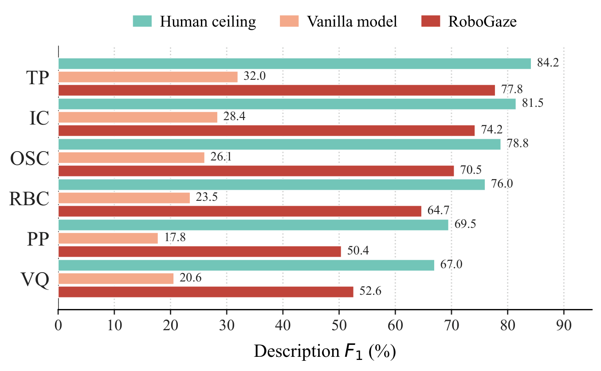

Anonymous Review Submission
RoboGaze: Evaluating Robot World Models via Structured Vision-Language Analysis
A training-free, multi-agent VLM evaluator that turns generated robot-manipulation videos into structured, temporally localized diagnostic reports.
This page is prepared for anonymous peer review. Author identities, affiliations, acknowledgments, and non-anonymous repository links are intentionally omitted.

Abstract
Recent advances in robot world models enable synthetic video generation for embodied prediction and planning. However, evaluating these videos is challenging: visually realistic outputs often violate physical laws, temporal consistency, or task logic, while conventional metrics and monolithic Vision-Language Model judges fail to generalize or provide precise diagnostic value.
RoboGaze is a training-free, multi-agent VLM framework that provides structured, interpretable evaluation for generated robot-manipulation videos. Given a task instruction and video, RoboGaze operates via a three-stage pipeline: task-scene grounding, dimension-specific specialist routing, and critic-based verification. It outputs temporally localized glitch reports categorized under a novel 6-dimension, 30-type robotics-specific taxonomy.
To benchmark RoboGaze, we introduce a human-validated dataset of 382 clips spanning simulated and real-world multi-view manipulation. Across eight open-source and proprietary VLM backbones, RoboGaze improves description-F1 by up to 43 points and temporal alignment by up to 37 points, while lifting clean-clip accuracy from under 25% to over 80%.
What RoboGaze Reports
Main Results
RoboGaze consistently improves semantic agreement, temporal localization, joint diagnostic quality, and clean-clip accuracy across proprietary and open VLM backbones on RoboGazeBench.
| Family | Model | Desc. F1 | mIoU | F x IoU | Clean | ||||||||
|---|---|---|---|---|---|---|---|---|---|---|---|---|---|
| V | CoT | RG | V | CoT | RG | V | CoT | RG | V | CoT | RG | ||
| Prop. | Gemini 3.1 Pro | 25.4 | 32.4 | 67.9 | .39 | .43 | .64 | 9.8 | 13.9 | 43.7 | .13 | .21 | .92 |
| GPT-5.5 | 23.9 | 30.5 | 65.1 | .37 | .41 | .63 | 8.8 | 12.5 | 41.1 | .09 | .18 | .90 | |
| Gemini 3.1 Flash | 20.2 | 26.1 | 57.8 | .35 | .39 | .61 | 7.0 | 10.2 | 35.0 | .08 | .16 | .87 | |
| Claude Sonnet 4.6 | 21.4 | 27.6 | 60.3 | .36 | .40 | .61 | 7.7 | 11.0 | 36.8 | .11 | .20 | .89 | |
| Open | Gemma4-31B | 17.6 | 23.4 | 56.6 | .33 | .37 | .66 | 5.7 | 8.7 | 34.5 | .03 | .12 | .86 |
| Qwen3.6-35B | 16.7 | 22.3 | 53.1 | .32 | .36 | .60 | 5.4 | 8.2 | 31.6 | .16 | .23 | .84 | |
| LLaVA-OV-2-8B | 14.2 | 19.5 | 47.9 | .30 | .33 | .56 | 4.3 | 6.5 | 26.9 | .18 | .25 | .82 | |
| InternVL3.5-38B | 15.5 | 21.0 | 50.1 | .31 | .35 | .58 | 4.8 | 7.4 | 28.9 | .04 | .13 | .81 | |
| Human | ceiling | 75.5 | 0.71 | 47.1 | 0.94 | ||||||||
Per-Dimension Performance

Framework
RoboGaze decomposes robot-video evaluation into three phases: task and scene grounding, specialist routing over suspicious temporal spans, and critic verification before producing the final report.
- Grounding: build task memory, scene memory, and clip-level execution observations.
- Specialists: route each subtask segment to relevant diagnostic dimensions.
- Verifier: reject weak hypotheses and merge supported failures into a report.

Qualitative Results

Supplementary Videos
Anonymous supplementary videos can be added here for review. Avoid links to personal, laboratory, or institution-owned hosting accounts.